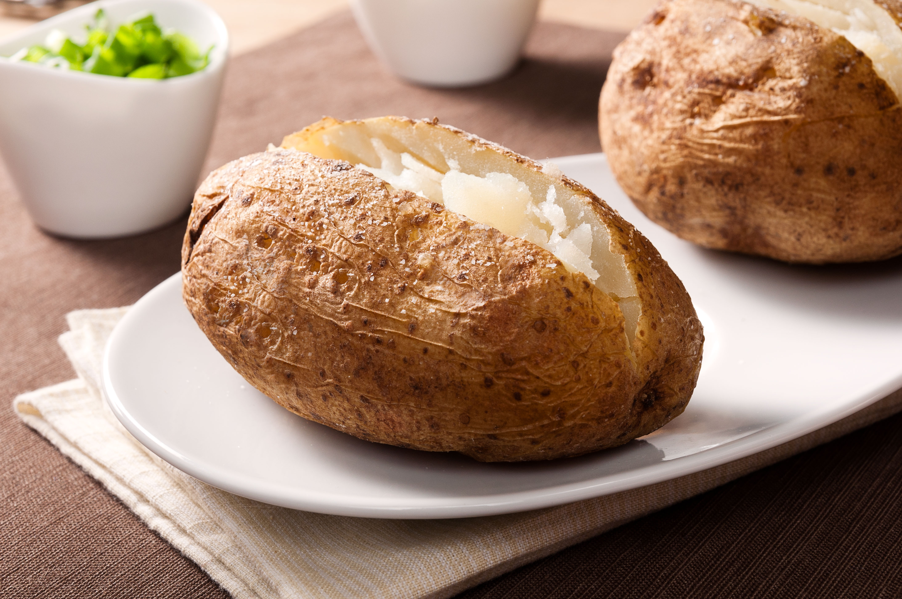

Classic Baked Potato

Servings: 4 people

Prep Time: 10 minutes

Cook Time: 1 hour
The perfect baked potato is crispy on the outside and fluffy on the inside. This classic recipe ensures that your baked potatoes are a hit, whether served as a side dish or a main course with your favorite toppings.
Did you know? A baked potato can generate enough electricity to light up a small LED bulb! This is due to the potato's natural electrolytes, which can conduct electricity when paired with metal electrodes. So, next time you bake a potato, just think – you’ve got a delicious snack and a tiny power plant all in one!